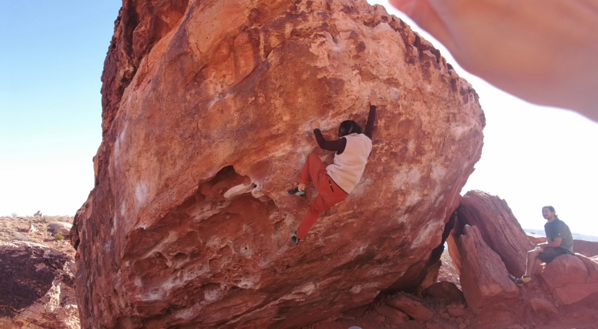

|
I am a PhD candidate at UC Berkeley advised by Prof. Mark W. Mueller and Prof. Jitendra Malik from the Berkeley AI Research Lab (BAIR). I am interested in bringing adaptation and agility to robots with an inspiration from cognitive science by deep learning methods. Before coming to Berkeley, I finished my undergrad at Cornell University, with a double major in Computer Science and Mechanical Engineering. I have also visited Prof. Ben M. Chen's lab at the Chinese University of Hong Kong during summer, 2024.Email / Resume / Google Scholar / LinkedIn |
|
|
|

|
code |
abstract |
bibtex |
arXiv |
video
This paper introduces a learning-based low-level controller for quadcopters, which adaptively controls quadcopters with significant variations in mass, size, and actuator capabilities. Our approach leverages a combination of imitation learning and reinforcement learning, creating a fast-adapting and general control framework for quadcopters that eliminates the need for precise model estimation or manual tuning. The controller estimates a latent representation of the vehicle's system parameters from sensor-action history, enabling it to adapt swiftly to diverse dynamics. Extensive evaluations in simulation demonstrate the controller's ability to generalize to unseen quadcopter parameters, with an adaptation range up to 16 times broader than the training set. In real-world tests, the controller is successfully deployed on quadcopters with mass differences of 3.7 times and propeller constants varying by more than 100 times, while also showing rapid adaptation to disturbances such as off-center payloads and motor failures. These results highlight the potential of our controller in extreme adaptation to simplify the design process and enhance the reliability of autonomous drone operations in unpredictable environments.
@misc{zhang2024learningbasedquadcoptercontrollerextreme,
title={A Learning-based Quadcopter Controller
with Extreme Adaptation},
author={Dingqi Zhang and Antonio Loquercio
and Jerry Tang and Ting-Hao Wang
and Jitendra Malik and Mark W. Mueller},
year={2024},
eprint={2409.12949},
archivePrefix={arXiv},
primaryClass={cs.RO},
url={https://arxiv.org/abs/2409.12949},
}
|
|
abstract |
bibtex |
arXiv |
video
This paper proposes the ProxFly, a residual deep Reinforcement Learning (RL)-based controller for close prox- imity quadcopter flight. Specifically, we design a residual mod- ule on top of a cascaded controller (denoted as basic controller) to generate high-level control commands, which compensate for external disturbances and thrust loss caused by downwash effects from other quadcopters. First, our method takes only the ego state and controllers’ commands as inputs and does not rely on any communication between quadcopters, thereby reducing the bandwidth requirement. Through domain randomization, our method relaxes the requirement for accurate system iden- tification and fine-tuned controller parameters, allowing it to adapt to changing system models. Meanwhile, our method not only reduces the proportion of unexplainable signals from the black box in control commands but also enables the RL training to skip the time-consuming exploration from scratch via guidance from the basic controller. We validate the effec- tiveness of the residual module in the simulation with different proximities. Moreover, we conduct the real close proximity flight test to compare ProxFly with the basic controller and an advanced model-based controller with complex aerodynamic compensation. Finally, we show that ProxFly can be used for challenging quadcopter in-air docking, where two quadcopters fly in extreme proximity, and strong airflow significantly dis- rupts flight. However, our method can stabilize the quadcopter in this case and accomplish docking.
@misc{zhang2024proxflyrobustcontrolclose,
title={ProxFly: Robust Control for Close Proximity
Quadcopter Flight via Residual Reinforcement Learning},
author={Ruiqi Zhang and Dingqi Zhang and Mark W. Mueller},
year={2024},
eprint={2409.13193},
archivePrefix={arXiv},
primaryClass={cs.RO},
url={https://arxiv.org/abs/2409.13193},
}
|
|
|
webpage |
code |
abstract |
bibtex |
arXiv |
video
This paper proposes an adaptive near-hover position controller for quadcopters, which can be deployed to quadcopters of very different mass, size and motor constants, and also shows rapid adaptation to unknown disturbances during runtime. The core algorithmic idea is to learn a single policy that can adapt online at test time not only to the disturbances applied to the drone, but also to the robot dynamics and hardware in the same framework. We achieve this by training a neural network to estimate a latent representation of the robot and environment parameters, which is used to condition the behaviour of the controller, also represented as a neural network. We train both networks exclusively in simulation with the goal of flying the quadcopters to goal positions and avoiding crashes to the ground. We directly deploy the same controller trained in the simulation without any modifications on two quadcopters in the real world with differences in mass, size, motors, and propellers with mass differing by 4.5 times. In addition, we show rapid adaptation to sudden and large disturbances up to one-third of the mass of the quadcopters. We perform an extensive evaluation in both simulation and the physical world, where we outperform a state-of-the-art learning-based adaptive controller and a traditional PID controller specifically tuned to each platform individually.
@article{zhang2023learning,
title={Learning a Single Near-hover Position Controller
for Vastly Different Quadcopters},
author={Zhang, Dingqi and Loquercio, Antonio and
Wu, Xiangyu and Kumar, Ashish and
Malik, Jitendra and Mueller, Mark W},
journal={arXiv preprint arXiv:2209.09232},
year={2022}
}
|
|
|
|
Ball collection has always been a laborous and time-consuming work in tennis training. We design Tennie to automate this process, so that players and coaches can dedicate their efforts entirely to skill development. Tennie is a mobile robot that can collect tennis balls autonomously. It is equipped with a roller to collect balls and a cassie platform to move freely. We have built a prototype and demonstrated its functionality. We are currently working on adding vision into the system so that the Tennie can compute optimal paths for maximum collection efficiency based on vision inputs. Our proposal has been selected for Ignite Grant in Spring 2024 and Spark Grant in Fall 2023 by the Jacobs Institude Innovation Catalysts. |
|
Skiing : Palisades Tahoe, California Tennis: Berkeley, California |
|  | ||
|
|
||

| Website adapted from
Jon Barron and
Ashish Kumar; Last updated: Nov 13, 2024 |